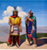
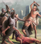
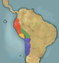
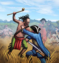
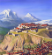
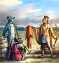
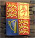
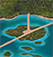
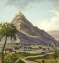
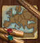

最新百科
热门百科
ParaWikis
这是 库斯科和 印加的全部任务列表[1]。以 库斯科开局时仅有第一部分的任务可用，成立 印加后将解锁剩余的全部任务树，包括最后一部分的日落入侵任务。
当DLC 变革之风未开启时，库斯科使用基础游戏版本任务[2]。










 库斯科和
库斯科和  印加的全部任务列表[1]。以 库斯科开局时仅有第一部分的任务可用，成立 印加后将解锁剩余的全部任务树，包括最后一部分的日落入侵任务。
印加的全部任务列表[1]。以 库斯科开局时仅有第一部分的任务可用，成立 印加后将解锁剩余的全部任务树，包括最后一部分的日落入侵任务。
 变革之风未开启时，库斯科使用基础游戏版本任务[2]。
变革之风未开启时，库斯科使用基础游戏版本任务[2]。